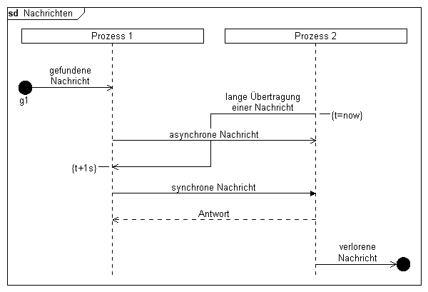

Syntax
Parameter
Syntax
Parameter
 messageid
Beispiel
messageid
Beispiel
|
DiagramName: Nachrichten DiagramStyle: uml PageSize: 600,auto PageMargins: 10,10,10,10 process: p1, Prozess 1 process: p2, Prozess 2 found: p1, "gefundene Nachricht","g1",l; msgbegin: m1, p2, p1, "lange Übertragung einer Nachricht" linecomment: p2, "{t=now}",r; msg: p1,p2, "asynchrone Nachricht"; msgend: m1 linecomment:p1, "{t+1s}"; msg: p1,p2, "synchrone Nachricht",!; msg: p2, p1, "Antwort",*; lost: p2, "verlorene Nachricht", ,r |
 |
Siehe auch